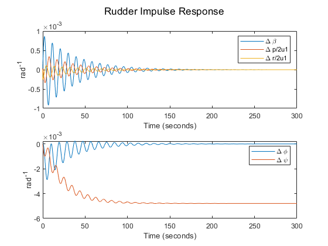
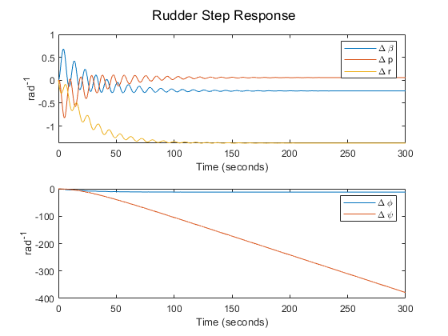
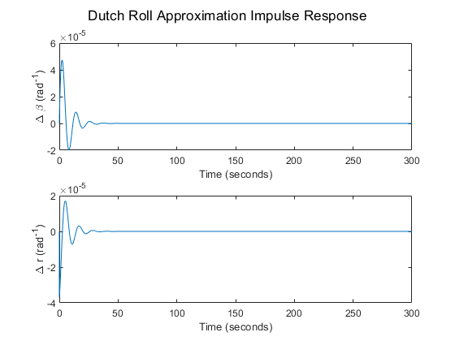
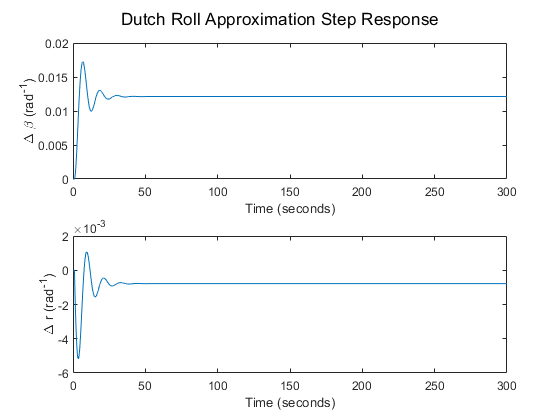

Contents
clear all; close all; clc;
m= 636636;
Ixx = 1.82*10^7*32.1740486;
Izz = 4.97*10^7*32.1740486;
Ixz = 9.70*10^5*32.1740486;
S = 5500;
b = 195.7;
u1 = 202.537183;
theta = 2.4/180*pi;
rho = 1.2673*10^-3*32.1740486;
q = 1/2*rho*u1^2;
g = 32.17405;
Dimensional stability Derivatives
Cyb=-0.96;
Clb=-0.221;
Cnb=0.15;
Clp=-0.45;
Cnp=-0.121;
Clr=0.101;
Cnr=-0.3;
Clda=0.0461;
Cnda=0.0064;
Cydr=0.175;
Cldr=0.007;
Cndr=-0.109;
Cyp = 0;
Cyr = 0;
Cyda = 0;
CnTb = 0;
CnTr = 0;
Yb = q*S/m*Cyb;
Yp = q*S*b/(2*m*u1)*Cyp;
Yr = q*S*b/(2*m*u1)*Cyr;
Yda = q*S/m*Cyda;
Ydr = q*S/m*Cydr;
Lb = q*S*b/Ixx*Clb;
Lp = q*S*b^2/(2*Ixx*u1)*Clp;
Lr = q*S*b^2/(2*Ixx*u1)*Clr;
Lda = q*S*b/Ixx*Clda;
Ldr = q*S*b/Ixx*Cldr;
Nb = q*S*b/Izz*Cnb;
NTb = q*S*b/Izz*CnTb;
Np = q*S*b^2/(2*Izz*u1)*Cnp;
Nr = q*S*b^2/(2*Izz*u1)*Cnr;
NTr = q*S*b^2/(2*Izz*u1)*CnTr;
Nda = q*S*b/Izz*Cnda;
Ndr = q*S*b/Izz*Cndr;
Set up state space equation
M = [u1 0 0 0 0;
0 1 -Ixz/Ixx 0 0;
0 -Ixz/Izz 1 0 0;
0 0 0 1 0;
0 0 0 0 1];
R= [Yb Yp Yr-u1 g*cos(theta) 0;
Lb Lp Lr 0 0;
Nb+NTb Np Nr+NTr 0 0;
0 1 tan(theta) 0 0;
0 0 sec(theta) 0 0];
F = [Yda Ydr;
Lda Ldr;
Nda Ndr;
0 0;
0 0];
A = inv(M)*R;
B = inv(M)*F;
C = eye(5);
D = zeros(5,2);
Problem 1 a)
[eVec,eVal] = eig(A);
eValRoll = eVal(:,2);
wdRoll = imag(eValRoll(2));
wnRoll = sqrt((real(eValRoll(2)))^2+(wdRoll)^2);
dampRoll = abs(real(eValRoll(2))/wnRoll);
delTRoll = log(2)/abs(real(eValRoll(2)));
NRoll = log(2)*wdRoll/abs(real(eValRoll(2))*2*pi);
fprintf ("Roll-----------------------------------------------------------")
fprintf ("\nDamped Frequency: %f\n", wdRoll)
fprintf ("Natural Frequency: %f\n", wnRoll)
fprintf("Damping ratio: %f\n", dampRoll)
fprintf("Time to damp to half the initial amplitude: %f\n", delTRoll)
fprintf("The number of cycles to damp to half the initial amplitude: %f\n",NRoll)
eValDutch = eVal(:,3);
wdDutch = imag(eValDutch(3));
wnDutch = sqrt((real(eValDutch(3)))^2+(wdDutch)^2);
dampDutch = abs(real(eValDutch(3))/wnDutch);
delTDutch = log(2)/abs(real(eValDutch(3)));
NDutch = log(2)*wdDutch/abs(real(eValDutch(3))*2*pi);
fprintf ("Dutch Roll-----------------------------------------------------")
fprintf ("\nDamped Frequency: %f\n", wdDutch)
fprintf ("Natural Frequency: %f\n", wnDutch)
fprintf("Damping ratio: %f\n", dampDutch)
fprintf("Time to damp to half the initial amplitude: %f\n", delTDutch)
fprintf("The number of cycles to damp to half the initial amplitude: %f\n",NDutch)
eValSpiral = eVal(:,5);
wdSpiral = imag(eValSpiral(5));
wnSpiral = sqrt((real(eValSpiral(5)))^2+(wdSpiral)^2);
dampSpiral = abs(real(eValSpiral(5))/wnSpiral);
delTSpiral = log(2)/abs(real(eValSpiral(5)));
NSpiral = log(2)*wdSpiral/abs(real(eValSpiral(5))*2*pi);
fprintf ("Sprial --------------------------------------------------------")
fprintf ("\nDamped Frequency: %f\n", wdSpiral)
fprintf ("Natural Frequency: %f\n", wnSpiral)
fprintf("Damping ratio: %f\n", dampSpiral)
fprintf("Time to damp to half the initial amplitude: %f\n", delTSpiral)
fprintf("The number of cycles to damp to half the initial amplitude: %f\n",NSpiral)
Roll-----------------------------------------------------------
Damped Frequency: 0.000000
Natural Frequency: 0.530864
Damping ratio: 1.000000
Time to damp to half the initial amplitude: 1.305698
The number of cycles to damp to half the initial amplitude: 0.000000
Dutch Roll-----------------------------------------------------
Damped Frequency: 0.406406
Natural Frequency: 0.410465
Damping ratio: 0.140276
Time to damp to half the initial amplitude: 12.038320
The number of cycles to damp to half the initial amplitude: 0.778657
Sprial --------------------------------------------------------
Damped Frequency: 0.000000
Natural Frequency: 0.035054
Damping ratio: 1.000000
Time to damp to half the initial amplitude: 19.773868
The number of cycles to damp to half the initial amplitude: 0.000000
Problem 1 b)
sys = ss(A,B,C,D);
t = 0:0.01:50;
figure,
impRud(2,:) = zeros(length(t),1);
impRud(1,:) = zeros(length(t),1);
impRud(2,1) = 1/180*pi;
impRudResponse = lsim(sys,impRud,t);
impRudResponse(:,2) = impRudResponse(:,2)*b/(2*u1);
impRudResponse(:,3) = impRudResponse(:,3)*b/(2*u1);
subplot(2,1,1)
plot(t,impRudResponse(:,1:3))
legend('\Delta \beta', '\Delta p/2u1', '\Delta r/2u1s')
ylabel('rad^{-1}')
xlabel('Time (seconds)')
subplot(2,1,2)
plot(t,impRudResponse(:,4:5))
ylabel('rad^{-1}')
xlabel('Time (seconds)')
legend('\Delta \phi', '\Delta \psi')
sgtitle('Rudder Impulse Response')
figure,
impA(2,:) = zeros(length(t),1);
impA(1,:) = zeros(length(t),1);
impA(1,1) = 1/180*pi;
impAResponse = lsim(sys,impA,t);
impAResponse(:,2) = impAResponse(:,2)*b/(2*u1);
impAResponse(:,3) = impAResponse(:,3)*b/(2*u1);
subplot(2,1,1)
plot(t,impAResponse(:,1:3))
legend('\Delta \beta', '\Delta p/2u1', '\Delta r/2u1s')
ylabel('rad^{-1}')
xlabel('Time (seconds)')
subplot(2,1,2)
plot(t,impAResponse(:,4:5))
ylabel('rad^{-1}')
xlabel('Time (seconds)')
legend('\Delta \phi', '\Delta \psi')
sgtitle('Aerlion Impulse Response')
stept = 0:0.01:100;
figure,
stepRud(2,:) = ones(length(stept),1);
stepRud(1,:) = zeros(length(stept),1);
stepRud(2,1:10) = 0;
stepRudResponse = lsim(sys,stepRud,stept);
subplot(2,1,1)
plot(stept,stepRudResponse(:,1:3))
ylabel('rad^{-1}')
xlabel('Time (seconds)')
legend('\Delta \beta', '\Delta p', '\Delta r')
subplot(2,1,2)
plot(stept,stepRudResponse(:,4:5))
ylabel('rad^{-1}')
xlabel('Time (seconds)')
legend('\Delta \phi', '\Delta \psi')
sgtitle('Rudder Step Response')
figure,
stepA(2,:) = zeros(length(stept),1);
stepA(1,:) = ones(length(stept),1);
stepA(1,1:10) = 0;
stepAResponse = lsim(sys,stepA,stept);
subplot(2,1,1)
plot(stept,stepAResponse(:,1:3))
ylabel('rad^{-1}')
xlabel('Time (seconds)')
legend('\Delta \beta', '\Delta p', '\Delta r')
subplot(2,1,2)
plot(stept,stepAResponse(:,4:5))
ylabel('rad^{-1}')
xlabel('Time (seconds)')
legend('\Delta \phi', '\Delta \psi')
sgtitle('Aerlion Step Response')
 
Dutch Roll Approximation
A2 = [Yb/u1 Yr/u1-1;
Nb Nr];
B2 = [Ydr/u1;
Ndr];
C2 = eye(2);
D2 =zeros(2,1);
[eVec2,eVal2] = eig(A2);
Problem 2a)
wd2 = imag(eVal2(1,1));
wn2 = sqrt((Nr*Yb-Nb*Yr+Nb*u1)/u1);
damp2 = -1/(2*wn2)*(Yb+Nr*u1)/u1;
delT2 = log(2)/abs(real(eVal2(1,1)));
N2 = log(2)*wd2/abs(real(eVal2(1,1))*2*pi);
fprintf ("Dutch Roll Approximation --------------------------------------")
fprintf ("\nDamped Frequency: %f\n", wd2)
fprintf ("Natural Frequency: %f\n", wn2)
fprintf("Damping ratio: %f\n", damp2)
fprintf("Time to damp to half the initial amplitude: %f\n", delT2)
fprintf("The number of cycles to damp to half the initial amplitude: %f\n",N2)
Dutch Roll Approximation --------------------------------------
Damped Frequency: 0.289620
Natural Frequency: 0.295354
Damping ratio: 0.196095
Time to damp to half the initial amplitude: 11.967860
The number of cycles to damp to half the initial amplitude: 0.551651
Problem 2b)
sys2 = ss(A2,B2,C2,D2);
t2 = 0:0.01:100;
figure,
imp = zeros(length(t2),1);
imp(1) = 1/180*pi;
impResponse = lsim(sys2,imp,t2);
subplot(2,1,1)
plot(t2,impResponse(:,1))
ylabel('\Delta \beta (rad^{-1})')
xlabel('Time (seconds)')
subplot(2,1,2)
plot(t2,impResponse(:,2))
ylabel('\Delta r (rad^{-1})')
xlabel('Time (seconds)')
sgtitle('Dutch Roll Approximation Impulse Response')
figure,
step = ones(length(t2),1)/180*pi;
step(1:100) = 0;
stepResponse = lsim(sys2,step,t2);
subplot(2,1,1)
plot(t2,stepResponse(:,1))
ylabel('\Delta \beta (rad^{-1})')
xlabel('Time (seconds)')
subplot(2,1,2)
plot(t2,stepResponse(:,2))
ylabel('\Delta r (rad^{-1})')
xlabel('Time (seconds)')
sgtitle('Dutch Roll Approximation Step Response')
 